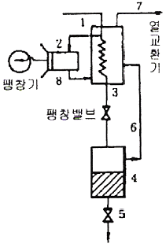

가스기능사 (2012-02-12 기출문제)
1과목: 가스안전관리
1. 탱크를 지상에 설치하고자 할 때 방류둑을 설치하지 않아도 되는 저장탱크는?
- 저장능력 1000톤 이상의 질소탱크
- 저장능력 1000톤 이상의 부탄탱크
- 저장능력 1000톤 이상의 산소탱크
- 저장능력 5톤 이상의 염소탱크
(정답률: 87%)

2. 액화석유가스 충전소에서 저장탱크를 지하에 설치하는 경우에는 철근콘크리트로 저장탱크실을 만들고, 그 실내에 설치하여야 한다. 이 때 저장탱크 주위의 빈 공간에는 무엇을 채워야 하는가?
- 물
- 마른 모래
- 자갈
- 콜타르
(정답률: 95%)
3. 독성가스 배관은 안전한 구조를 갖도록 하기 위해 2중관 구조로 하여야 한다. 다음 가스 중 2중관으로 하지 않아도 되는 가스는?
- 암모니아
- 염화메탄
- 시안화수소
- 에틸렌
(정답률: 65%)
4. 자연환기설비 설치 시 LP가스의 용기 보관실 바닥 면적이 3m2 이라면 통풍구의 크기는 몇 cm2 이상으로 하도록 되어 있는가? (단, 철망 등이 부착되어 있지 않은 것으로 간주한다.)
- 500
- 700
- 900
- 1100
(정답률: 88%)
5. 자동차 용기 충전시설에 게시한 “화기엄금” 이라 표시한 게시판의 색상은?
- 황색바탕에 흑색문자
- 백색바탕에 적색문자
- 흑색바탕에 황색문자
- 적색바탕에 백색문자
(정답률: 86%)
6. 제조소의 긴급용 벤트스택 방출구의 위치는 작업원이 항시 통행하는 장소로부터 얼마나 이격되어야 하는가?
- 5m 이상
- 10m 이상
- 15m 이상
- 30m 이상
(정답률: 67%)
7. 내용적이 1천 L를 초과하는 염소용기의 부식 여유두께의 기준은?
- 2㎜ 이상
- 3㎜ 이상
- 4㎜ 이상
- 5㎜ 이상
(정답률: 58%)
8. 고압가스 용접용기 제조 시 용기동판의 최대 두께와 최소두께의 차이는 평균 두께의 몇 % 이하로 하여야 하는가?(관련 규정 개정전 문제입니다. 기존 정답은 2번이었으면 2번을 누르면 정답 처리 됩니다. 자세한 내용은 해설을 참고하세요.)
- 10%
- 20%
- 30%
- 40%
(정답률: 78%)
9. 일반도시가스사업자가 선임하여야 하는 안전점검원 선임의 기준이 되는 배관길이 산정 시 포함되는 배관은?
- 사용자공급관
- 내관
- 가스사용자 소유 토지내의 본관
- 공공 도로내의 공급관
(정답률: 71%)
10. 가연성 가스로 인한 화재의 종류는?
- A급 화재
- B급 화재
- C급 화재
- D급 화재
(정답률: 81%)
11. 고압가스(산소, 아세틸렌, 수소)의 품질검사 주기의 기준은?
- 1월 1회 이상
- 1주 1회 이상
- 3일 1회 이상
- 1일 1회 이상
(정답률: 71%)
12. 도시가스 사용시설의 배관은 움직이지 아니하도록 고정부착하는 조치를 하도록 규정하고 있는데 다음 중 배관의 호칭지름에 따른 고정간격의 기준으로 옳은 것은?
- 배관의 호칭지름 20㎜인 경우 2m 마다 고정
- 배관의 호칭지름 32㎜인 경우 3m 마다 고정
- 배관의 호칭지름 40㎜인 경우 4m 마다 고정
- 배관의 호칭지름 65㎜인 경우 5m 마다 고정
(정답률: 76%)
13. 일반도시가스사업의 가스공급시설에서 중압 이하의 배관과 고압 배관을 매설하는 경우 서로 몇 m 이상의 거리를 유지하여 설치하여야 하는가?
- 1
- 2
- 3
- 5
(정답률: 63%)
14. 고압가스 일반제조소에서 저장탱크 설치 시 물분무장치는 동시에 방사할 수 있는 최대 수량을 몇 분 이상 연속하여 방사할 수 있는 수원에 접속되어 있어야 하는가?
- 30분
- 45분
- 60분
- 90분
(정답률: 79%)
15. 아세틸렌을 용기에 충전할 때에는 미리 용기에 다공 물질을 고루 채운 후 침윤 및 충전을 하여야 한다. 이때 다공도는 얼마로 하여야 하는가?
- 75% 이상, 92% 미만
- 70% 이상, 95% 미만
- 62% 이상, 75% 미만
- 92% 이상
(정답률: 90%)
16. 다음 중 냄새로 누출여부를 쉽게 알 수 있는 가스는?
- 질소, 이산화탄소
- 일산화탄소, 아르곤
- 염소, 암모니아
- 에탄, 부탄
(정답률: 92%)
17. 다음 중 독성이면서 가연성인 가스는?
- SO2
- COCl2
- HCN
- C2H6
(정답률: 82%)
18. 저장능력이 1ton 인 액화염소 용기의 내용적(L)은? (단, 액화염소 정수(C)는 0.80 이다.)
- 400
- 600
- 800
- 1000
(정답률: 88%)
19. 고압가스 운반 등의 기준으로 틀린 것은?
- 고압가스를 운반하는 때에는 재해방지를 위하여 필요한 주의사항을 기재한 서면을 운전자에게 교부하고 운전 중 휴대하게 한다.
- 차량의 고장, 교통사정 또는 운전자의 휴식 등 부득이한 경우를 제외하고는 장시간 정차하여서는 안 된다.
- 고속도로 운행 중 점심식사를 하기 위해 운반책임자와 운전자가 동시에 차량을 이탈할 때에는 시건장치를 하여야 한다.
- 지정한 도로, 시간, 속도에 따라 운반하여야 한다.
(정답률: 86%)
20. 정압기지의 방호벽을 철근콘크리트 구조로 설치할 경우 방호벽 기초의 기준에 대한 설명 중 틀린 것은?
- 일체로 된 철근콘크리트 기초로 한다.
- 높이 350㎜ 이상, 되메우기 깊이는 300㎜ 이상으로 한다.
- 두께 200㎜ 이상, 간격 3200㎜ 이하의 보조벽을 본체와 직각으로 설치한다.
- 기초의 두께는 방호벽 최하부 두께의 120% 이상으로 한다.
(정답률: 66%)
21. 고압가스 제조설비의 계장회로에는 제조하는 고압가스의 종류·온도 및 압력과 제조설비의 상황에 따라 안전확보를 위한 주요 부문에 설비가 잘못 조작되거나 정상적인 제조를 할 수 없는 경우에 자동으로 원재료의 공급을 차단시키는 등 제조설비 안의 제조를 제어할 수 있는 장치를 설치하는데 이를 무엇이라 하는가?
- 인터록제어장치
- 긴급차단장치
- 긴급이송설비
- 벤트스택
(정답률: 89%)
22. 다음 중 독성(TLV-TWA)이 가장 강한 가스는?
- 암모니아
- 황화수소
- 일산화탄소
- 아황산가스
(정답률: 60%)
23. 독성가스 배관을 지하에 매설할 경우 배관은 그 가스가 혼입될 우려가 있는 수도시설과 몇 m 이상의 거리를 유지하여야 하는가?
- 50m
- 100m
- 200m
- 300m
(정답률: 54%)
24. 다음 중 같은 성질을 가스로만 나열된 것은?
- 에탄, 에틸렌
- 암모니아, 산소
- 오존, 아황산가스
- 헬륨, 염소
(정답률: 87%)
25. 고압가스용기의 안전점검 기준에 해당되지 않는 것은?
- 용기의 부식, 도색 및 표시 확인
- 용기의 캡이 씌워져 있거나 프로텍터의 부착여부 확인
- 재검사 기간의 도래 여부를 확인
- 용기의 누출을 성냥불로 확인
(정답률: 91%)
26. 가스 공급시설의 임시사용 기준 항목이 아닌 것은?
- 도시가스 공급이 가능한지의 여부
- 도시가스의 수급상태를 고려할 때 해당지역에 도시가스의 공급이 필요한지의 여부
- 공급의 이익 여부
- 가스공급시설을 사용할 때 안전을 해칠 우려가 있는지의 여부
(정답률: 92%)
27. 용기의 파열사고 원인으로 가장 거리가 먼 것은?
- 용기의 내압력 부족
- 용기의 내압 상승
- 용기내에서 폭발성 혼합가스에 의한 발화
- 안전밸브의 작동
(정답률: 91%)
28. 도시가스 배관의 철도궤도 중심과 이격거리 기준으로 옳은 것은?
- 1m 이상
- 2m 이상
- 4m 이상
- 5m 이상
(정답률: 65%)
29. 충전용기 보관실의 온도는 항상 몇 ℃ 이하를 유지하여야 하는가?
- 40℃
- 45℃
- 50℃
- 55℃
(정답률: 91%)
30. 시안화수소 가스는 위험성이 매우 높아 용기에 충전 보관할 때에는 안정제를 첨가하여야 한다. 적합한 안정제는?
- 염산
- 이산화탄소
- 황산
- 질소
(정답률: 69%)
2과목: 가스장치 및 기기
31. 가스 폭발 사고의 근본적인 원인으로 가장 거리가 먼 것은?
- 내용물의 누출 및 확산
- 화학반응열 또는 잠열의 축적
- 누출경보장치의 미비
- 착화원 또는 고온물의 생성
(정답률: 64%)
32. 정압기의 선정 시 유의사항으로 가장 거리가 먼 것은?
- 정압기의 내압성능 및 사용 최대차압
- 정압기의 용량
- 정압기의 크기
- 1차 압력과 2차 압력범위
(정답률: 83%)
33. 가스용품제조허가를 받아야 하는 품목이 아닌 것은?
- PE배관
- 매몰형 정압기
- 로딩암
- 연료전지
(정답률: 72%)
34. 다음 그림은 무슨 공기 액화장치인가?

- 클라우드식 액화장치
- 린데식 액화장치
- 캐피자식 액화장치
- 필립스식 액화장치
(정답률: 83%)
35. 2000rpm으로 회전하는 펌프를 3500rpm으로 변환하였을 경우 펌프의 유량과 양정은 각각 몇 배가 되는가?
- 유량 : 2.65, 양정 : 4.12
- 유량 : 3.06, 양정 : 1.75
- 유량 : 3.06, 양정 : 5.36
- 유량 : 1.75, 양정 : 3.06
(정답률: 67%)
36. 액주식 압력계가 아닌 것은?
- U자관식
- 경사관식
- 벨로우즈식
- 단관식
(정답률: 74%)
37. 가스분석 시 이산화탄소 흡수제로 주로 사용되는 것은?
- NaCl
- KCl
- KOH
- Ca(OH)2
(정답률: 82%)
38. 이동식부탄연소기의 용기연결방법에 따른 분류가 아닌 것은?
- 카세트식
- 직결식
- 분리식
- 일체식
(정답률: 60%)
39. 파일럿 정압기 중 구동압력이 증가하면 개도도 증가하는 방식으로서 정특성, 동특성이 양호하고 비교적 컴팩트한 구조의 로딩형 정압기는?
- Fisher 식
- axial flow 식
- Reynolds 식
- KRF 식
(정답률: 77%)
40. 다음 가스분석법 중 흡수분석법에 해당하지 않는 것은?
- 헴펠법
- 구우데법
- 오르자트법
- 게겔법
(정답률: 69%)
41. 땅 속의 애노드에 강제 전압을 가하여 피방식 금속제를 캐소드로 하는 전기방식법은?
- 희생양극법
- 외부전원법
- 선택배류법
- 강제배류법
(정답률: 71%)
42. 화학적 부식이나 전기적 부식의 염려가 없고 0.4MPa 이하의 매몰배관으로 주로 사용하는 배관의 종류는?
- 배관용 탄소강관
- 폴리에틸렌피복강관
- 스테인리스강관
- 폴리에틸렌관
(정답률: 61%)
43. 도시가스의 총발열량이 10400kcal/m3, 공기에 대한 비중이 0.55 일 때 웨베지수는 얼마인가?
- 11023
- 12023
- 13023
- 14023
(정답률: 60%)
44. 가연성가스 검출기 중 탄광에서 발생하는 CH4 의 농도를 측정하는데 주로 사용되는 것은?
- 간섭계형
- 안전등형
- 열선형
- 반도체형
(정답률: 81%)
45. 서로 다른 두 종류의 금속을 연결하여 폐회로를 만든 후, 양접점에 온도차를 두면 금속 내에 열기전력이 발생하는 원리를 이용한 온도계는?
- 광전관식 온도계
- 바이메탈 온도계
- 서미스터 온도계
- 열전대 온도계
(정답률: 81%)
3과목: 가스일반
46. 다음 중 액화가 가장 어려운 가스는?
- H2
- He
- N2
- CH4
(정답률: 72%)
47. 다음 중 압력이 가장 높은 것은?
- 10 lb/iN2
- 750 ㎜Hg
- 1 atm
- 1 kg/cm2
(정답률: 74%)
48. 자동절체식조정기의 경우 사용 쪽 용기안의 압력이 얼마 이상일 때 표시 용량의 범위에서 예비 쪽 용기에서 가스가 공급되지 않아야 하는가?
- 0.⑤MPa
- 0.1MPa
- 0.15MPa
- 0.2MPa
(정답률: 61%)
49. 산소의 성질에 대한 설명 중 옳지 않은 것은?
- 자신은 폭발위험은 없으나 연소를 돕는 조연제이다.
- 액체산소는 무색, 무취이다.
- 화학적으로 활성이 강하며, 많은 원소와 반응하여 산화물을 만든다.
- 상자성을 가지고 있다.
(정답률: 70%)
50. “성능계수(ℇ)가 무한정한 냉동기의 제작은 불가능하다.” 라고 표현되는 법칙은?
- 열역학 제0법칙
- 열역학 제1법칙
- 열역학 제2법칙
- 열역학 제3법칙
(정답률: 77%)
51. 60K를 랭킨온도로 환산하면 약 몇 °R 인가?
- 109
- 117
- 126
- 135
(정답률: 69%)
52. 밀폐된 공간 안에서 LP가스가 연소되고 있을 때의 현상으로 틀린 것은?
- 시간이 지나감에 따라 일산화탄소가 증가된다.
- 시간이 지나감에 따라 이산화탄소가 증가된다.
- 시간이 지나감에 따라 산소농도가 감소된다.
- 시간이 지나감에 따라 아황산가스가 증가된다.
(정답률: 71%)
53. 탄소 12g을 완전 연소시킬 경우 발생되는 이산화탄소는 약 몇 L 인가? (단, 표준상태일 때를 기준으로 한다.)
- 11.2
- 12
- 22.4
- 32
(정답률: 80%)
54. 공기 중에서 폭발하한이 가장 낮은 탄화수소는?
- CH4
- C4H10
- C3H8
- C2H6
(정답률: 59%)
55. 에틸렌 제조의 원료로 사용되지 않는 것은?
- 나프타
- 에탄올
- 프로판
- 염화메탄
(정답률: 60%)
56. 다음 중 비중이 가장 작은 가스는?
- 수소
- 질소
- 부탄
- 프로판
(정답률: 68%)
57. 가연성가스 정의에 대한 설명으로 맞는 것은?
- 폭발한계의 하한이 10% 이하인 것과 폭발한계의 상한과 하한의 차가 20% 이상인 것을 말한다.
- 폭발한계의 하한이 20% 이하인 것과 폭발한계의 상한과 하한의 차가 10% 이상인 것을 말한다.
- 폭발한계의 상한이 10% 이하인 것과 폭발한계의 상한과 하한의 차가 20% 이하인 것은 말한다.
- 폭발한계의 상한이 10% 이상인 것과 폭발한계의 상한과 하한의 차가 10% 이하인 것은 말한다.
(정답률: 77%)
58. 다음 중 아세틸렌의 발생방식이 아닌 것은?
- 주수식 : 카바이드에 물을 넣는 방법
- 투입식 : 물에 카바이드를 넣는 방법
- 접촉식 : 물과 카바이드를 소량씩 접촉시키는 방법
- 가열식 : 카바이드를 가열하는 방법
(정답률: 82%)
59. 암모니아 가스의 특성에 대한 설명으로 옳은 것은?
- 물에 잘 녹지 않는다.
- 무색의 기체이다.
- 상온에서 아주 불안정하다.
- 물에 녹으면 산성이 된다.
(정답률: 57%)
60. 질소에 대한 설명으로 틀린 것은?
- 질소는 다른 원소와 반응하지 않아 기기의 기밀시험용 가스로 사용된다.
- 촉매 등을 사용하여 상온(35℃)에서 수소와 반응시키면 암모니아를 생성한다.
- 주로 액체 공기를 비점 차이로 분류하여 산소와 같이 얻는다.
- 비점이 대단히 낮아 극저온의 냉매로 이용된다.
(정답률: 61%)